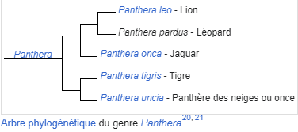

Le léopard est polyvalent en termes d'habitat. Hormis dans les déserts ouverts et les mangroves14, le félin s'adapte aux forêts sempervirentes, aux savanes, aux bois, aux collines rocheuses, aux marécages, aux bords de mer comme à la montagne. Une carcasse de léopard a été trouvée à 5 700 mètres d'altitude sur le Kilimandjaro en Tanzanie15. La taille du territoire du léopard varie selon son habitat. Dans la savane, en zone où les proies sont abondantes, le territoire mesure de 30 à 78 km2 pour les mâles et de 16 à 38 km2 pour les femelles. Dans les régions montagneuses, le territoire peut s'étendre jusqu'à 400 km2. En Thaïlande, les léopards ont un territoire de 27 à 37 km2, en Russie, il peut s'étendre à 300 km216. Le territoire du mâle recouvre un ou plusieurs territoires de femelles. Le marquage du territoire est réalisé en griffant des arbres, ou en aspergeant les buissons et rochers d'urine12. La densité de population est très variable selon les régions. Elle est estimée à 6 individus pour 100 km2 dans la forêt de Taï en Côte d'Ivoire, 8 à 12 individus pour la forêt d'Ituri en RDC, de 3,5 individus pour le parc national Kruger en Afrique du Sud (mais 30 individus pour les zones avec des cours d'eau)3. Les parcs nationaux suivants possèdent de bonnes populations de léopards : Amboseli, Nairobi, Serengeti, Hwange, Sud-Luangwa (en) et Kruger3.
La lignée des panthères, les Pantherinae, a divergé il y a 10,8 millions d'années de l'ancêtre commun des Felidae, puis il y a 6,4 millions d'années, la lignée des panthères nébuleuses Neofelis et celle des Panthera20. Le plus vieil ancêtre commun aux Panthera dont on possède des fossiles est Panthera palaeosinensis, qui vivait de la fin du Pliocène au début du Pléistocène. Des formes fossilisées de léopards ont été découvertes en Europe méridionale
L’extrême variabilité du pelage a historiquement conduit à la création d'un nombre important de sous-espèces basée sur la forme ou la couleur des taches. La forme mélanique ne constitue pas une sous-espèce, puisque des portées de léopards noirs et tachetés naissent régulièrement15. Vingt-sept sous-espèces de léopards (Panthera pardus) étaient communément reconnues avant que la biologiste sri lankaise Sriyanie Miththapala et ses collaborateurs ne révisent la classification des léopards par l'étude directe de l'ADN en 199522. Il existe neuf sous-espèces de léopards selon l'Union internationale pour la conservation de la nature